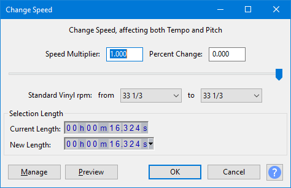

Change Speed
To change tempo without affecting pitch or frequency range, use or .
All controls are linked, so changing one will change the others.
- Accessed by:
- 
{kind=link}
Speed Multiplier
This sets how many times faster or slower the audio will play. For example, setting this to "2.000" will double the speed (and raise the pitch by one octave), or setting this to "0.500" will halve the playback speed (and lower the pitch by one octave).
Values between 0.010 (1/100th of the original speed) and 50.000 (50 times faster) are permitted. Values outside of this range will gray out the and buttons and cannot be applied.
Percent Change
If you know how much you want to change the speed of the audio in percent, enter that value here. You can also drag the slider to choose a Percent Change - the input box and the Speed Multiplier will update as you drag the slider.
Values between -99.000 % (equivalent to 1/100th of the original speed) and 4900.000 % (equivalent to 50 times faster) are permitted. Values outside of this range will gray out the and buttons and cannot be applied.
Examples:
- A change of +100 % (double speed) is the same as multiplying the speed (Speed Multiplier setting) by 2.
- A change of -50 % (half speed) is the same as multiplying the speed by 0.5.
- A change of +20 % is the same as multiplying the speed by 1.2.
- A change of -20 % is the same as multiplying the speed by 0.8
Standard Vinyl rpm
If you have a recording of a record that was played back and recorded at the wrong speed you can correct that using these two dropdown menus. In the from dropdown choose the speed the record was played back at then in the to dropdown choose the speed it should have been played back at.
Selection Length
The Current Length time control indicates the length of the current selection. This control is for information only and cannot be modified.
The New Length time control sets the length that the selection will be after applying the effect.
The Selection Format may be changed by selecting the required option from the dropdown menu of the New Length control. To access the dropdown menu, click the little black downwards-pointing triangle on the right end of the time control, right-click over any of its time digits, or select any of the digits then use the keyboard Menu Key. Changing the format in the New Length control will also update the digits in the Current Length control.
Buttons
Clicking on the command buttons give the following results:
- gives a dropdown menu enabling you to manage presets for the tool and to see some detail about the tool. For details see Manage presets.
- plays a short preview of what the audio would sound like if the effect is applied with the current settings, without making actual changes to the audio. The length of preview is determined by your setting in , the default setting is 6 seconds.
- applies the effect to the selected audio with the current effect settings.
- aborts the effect and leaves the audio unchanged.
 brings you to the appropriate page in the Manual, this page.
brings you to the appropriate page in the Manual, this page.